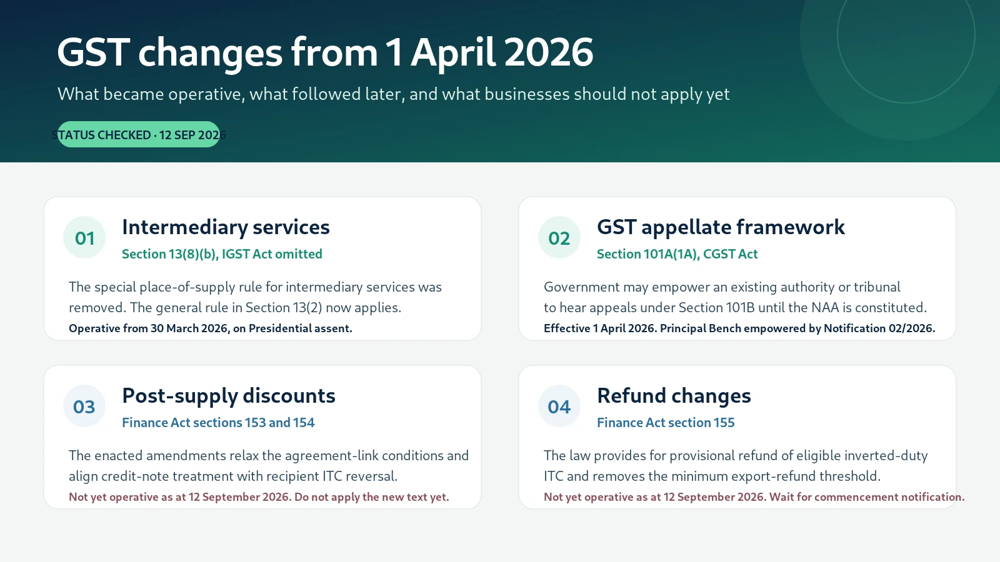

GST Changes from 1 April 2026: What Changed, What Did Not
A date-sensitive guide to the GST changes around 1 April 2026, including intermediary services, the GST appellate framework, and the Finance Act amendments to discounts and refunds that were enacted but remained subject to a separate commencement notification.


The first point to get right: 1 April 2026 was not a single commencement date
The Finance Act, 2026 received Presidential assent on 30 March 2026. Its commencement clause does not bring every GST amendment into force on the same day. Sections 2 to 129, clause (b) of section 152 and section 156 were specified to come into force on 1 April 2026. Sections 153 to 155 were expressly left to a later date to be appointed by the Central Government through notification. Section 157, which omits section 13(8)(b) of the IGST Act, is not included in either of those two commencement groups and therefore operated from the date of assent, 30 March 2026. Finance Act, 2026, section 1(2).
The practical rule is simple: do not read the Finance Act as if all five GST amendments switched on together on 1 April 2026. For transaction-level work, fix the relevant date and then check the commencement provision and notification history.
1. Intermediary services: the special place-of-supply rule was removed
The most commercially significant change for cross-border service providers is the omission of section 13(8)(b) of the IGST Act, 2017, which had prescribed the place of supply of intermediary services as the location of the supplier.
With that clause removed, intermediary services fall back on the general rule in section 13(2), under which the place of supply is the location of the recipient, subject to the proviso where the recipient's location is not available in the ordinary course of business. The amendment became operative on 30 March 2026, when the Finance Act received Presidential assent. The GST Council Secretariat also recorded this position in its March 2026 newsletter. GST Council Secretariat, March 2026 Newsletter.
What this changes in practice
For an Indian service provider that qualifies as an intermediary and supplies services to a recipient outside India, the place of supply is no longer automatically pulled back to India merely because the supplier is in India. Where the recipient is outside India, the general rule under section 13(2) can place the service outside India.
That can materially change the GST result, including the possibility of the supply satisfying the place-of-supply limb of the definition of export of services, but the other conditions in section 2(6) of the IGST Act still have to be satisfied. The amendment does not by itself make every service provided to a foreign customer an export. The questions of whether the supplier is an intermediary, whether the recipient is outside India, whether payment is received in the permitted manner and whether the supplier and recipient are merely establishments of distinct persons remain important.
Do not stop the analysis at section 13(8)(b). After 30 March 2026, the correct sequence is to identify the nature of the service, determine whether section 13(2) or another specific rule applies, and then test every condition of section 2(6) before treating the supply as an export.
Who should revisit their working papers?
Businesses in IT and business process services, sourcing and procurement support, marketing and advertising, commission arrangements, logistics support, and other cross-border models that have historically been treated as intermediary services should review their place-of-supply analysis for services supplied on or after 30 March 2026.
The review should be transaction specific. The amendment changes the statutory place-of-supply rule. It does not erase the separate definition of intermediary service or the other export conditions.
2. GST appellate framework: an interim route for section 101B appeals
The Finance Act, 2026 inserted section 101A(1A) of the CGST Act, 2017. It allows the Central Government, on the recommendation of the GST Council, to empower an existing authority constituted under law, including a tribunal, to hear appeals under section 101B until the National Appellate Authority is constituted.
This amendment was specified to come into force on 1 April 2026. The Government subsequently issued Notification No. 02/2026-Central Tax dated 7 May 2026, empowering the Principal Bench of the Appellate Tribunal, New Delhi, constituted under section 109(3), to hear appeals under section 101B. The notification states that it is deemed to have come into force on 1 April 2026. A corrigendum dated 8 May 2026 corrected the notification reference in the published text. GST Council Secretariat, March 2026 Newsletter.
Why this matters
The amendment is aimed at avoiding a gap in the appellate mechanism for conflicting advance rulings. For professionals and officers, the important point is that the framework is no longer only a provision waiting for a future National Appellate Authority. An existing tribunal has been empowered for the interim period.
For any appeal under section 101B, the practitioner should therefore check the current tribunal notification, the date of communication of the order and the applicable filing window, rather than relying on older descriptions of the advance ruling appellate structure.
Professional caution: the commencement of section 101A(1A) on 1 April 2026 and the later notification empowering the Principal Bench are two separate legal steps. A working paper should record both dates.
3. Post-supply discounts: the amendment was enacted, but not switched on
One of the most discussed Finance Act, 2026 proposals concerns section 15(3)(b) of the CGST Act and the connected amendment to section 34(1).
The enacted text changes the conditions for excluding a post-supply discount from the value of supply. The amended section 15(3)(b) focuses on the supplier issuing a credit note and the recipient reversing the input tax credit attributable to the discount. The related section 34 amendment expressly recognises such a discount as a ground for issuing a credit note. Finance Act, 2026, sections 153 and 154.
There is, however, a critical commencement point. Sections 153 and 154 were not brought into force on 1 April 2026. Section 1(2)(b) of the Finance Act specifically leaves sections 153 to 155 to a later commencement notification. As of the review date of 12 September 2026, these amendments remained a future-law position rather than the operative wording to be applied to a current discount transaction. Finance Act, 2026, section 1(2).
This is the biggest trap in the 2026 changes. Parliament has enacted the new wording, but enactment is not the same thing as commencement. A supplier should not change its live credit-note process merely because the Finance Act contains the amended text.
Until the relevant commencement notification is issued, the operative section 15(3)(b) and the existing credit-note framework remain the basis for current transactions. In a year-end discount review, therefore, record the tax treatment under the law actually in force for the date of supply, not under the future amended language.
4. Refunds: two useful reforms were also left for a later commencement date
Section 155 of the Finance Act, 2026 amends section 54(6) and section 54(14) of the CGST Act.
The first change extends the 90 percent provisional refund mechanism to eligible refunds of unutilised input tax credit arising from inverted duty structure. The second removes the minimum threshold for sanction of a refund of tax in cases where goods are exported out of India with payment of tax. Finance Act, 2026, section 155.
Both changes are commercially important because they can affect working capital and the treatment of small export refund claims. But, again, the commencement clause puts section 155 into the group that requires a separate notification.
Do not assume the provisional inverted-duty refund is available merely because section 54(6) has been amended in the Finance Act. The commencement notification and the prescribed conditions still control when and how the facility becomes operational.
5. What did not change merely because the calendar moved to 1 April 2026?
There was no general GST rate reset simply because FY 2026-27 began. The major rate rationalisation had already taken effect earlier, and other changes have their own notification dates. A transaction should therefore not be tested against an imagined "1 April GST rate" unless a particular rate notification says so.
Similarly, the e-invoice reporting rule requiring taxpayers with AATO of ₹10 crore or more to report invoices, credit notes and debit notes within 30 days of the document date was an earlier change, effective from 1 April 2025. It is not a new 1 April 2026 rule. The Invoice Registration Portal continues to describe that 30-day restriction. IRP advisory.
This distinction matters in scrutiny work because a rule that was already operative should not be presented as a fresh FY 2026-27 amendment.
6. A practical checklist for FY 2026-27
For taxpayers and finance teams
Review cross-border service arrangements that have been treated as intermediary services. Revisit place of supply from 30 March 2026 and document the section 2(6) export conditions separately.
Do not change the accounting or credit-note workflow for post-supply discounts only because the Finance Act 2026 contains a new section 15(3)(b) text. Wait for the commencement notification and then update the SOP, ERP logic and recipient ITC controls.
For refund planning, distinguish between what the Finance Act has enacted and what is actually operative. A cash-flow model should not assume the inverted-duty provisional refund facility until commencement and procedural conditions are live.
For tax professionals
For every opinion or reconciliation involving the 2026 amendments, record three dates separately:
- Date of the Finance Act or notification.
- Legal commencement date.
- Transaction or order date.
This simple discipline prevents future-law language from being applied to an earlier period.
For officers and scrutiny work
When a return or supporting document relates to the 2026 transition, identify whether the issue concerns an amendment that was operative, an amendment that had been enacted but not commenced, or a procedural advisory that did not itself change the charging or valuation provision.
A scrutiny observation should therefore cite the provision as it stood on the relevant transaction date, followed by the commencement notification or amendment history where necessary.
7. The short version
The real 1 April 2026 story is narrower than many budget summaries suggest.
Operative:
- Section 101A(1A), CGST Act, creating an interim mechanism for section 101B appeals, effective 1 April 2026, with the Principal Bench of the Appellate Tribunal, New Delhi subsequently empowered by Notification No. 02/2026-Central Tax, deemed effective from 1 April 2026.
- Omission of section 13(8)(b) of the IGST Act for intermediary services, operative from 30 March 2026, with place of supply moving to the general rule in section 13(2).
Enacted but not yet operative as at 12 September 2026:
- Section 15(3)(b) changes concerning post-supply discounts.
- Section 34(1) changes concerning credit notes for those discounts.
- Section 54(6) change extending provisional refund to inverted-duty ITC.
- Section 54(14) change removing the minimum export-refund threshold for goods exported with payment of tax.
The practical lesson is simple: commencement is part of the law. For FY 2026-27 work, do not apply an enacted amendment until its commencement provision and notification history show that it is operative.
Sources and verification points. Finance Act, 2026 (No. 4 of 2026), especially section 1(2) and sections 153 to 157; GST Council Secretariat, GST Newsletter, March 2026; Notification No. 02/2026-Central Tax dated 7 May 2026 and Corrigendum S.O. 2349(E) dated 8 May 2026; GSTN/Invoice Registration Portal advisory on the 30-day e-invoice reporting restriction. For a live matter, verify the applicable Act, notification, circular and judicial position for the relevant date.
Legal basis and links
Legal basis. Finance Act, 2026 (No. 4 of 2026), sections 1(2), 101A, 13(8)(b), and 153 to 157; Notification No. 02/2026-Central Tax dated 7 May 2026, read with Corrigendum S.O. 2349(E) dated 8 May 2026; GST Council Secretariat Newsletter, March 2026.
Common pitfall. Do not treat every GST amendment in the Finance Act, 2026 as operative from 1 April 2026. Sections 153 to 155 require a separate commencement notification, while the intermediary amendment under section 157 took effect on 30 March 2026 and the section 101A(1A) change took effect on 1 April 2026.